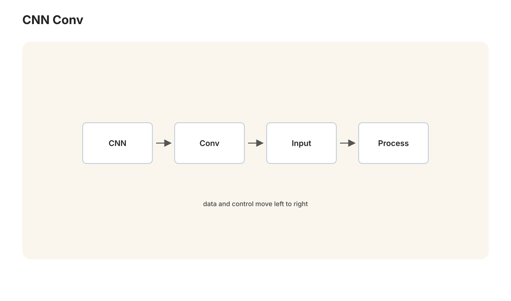
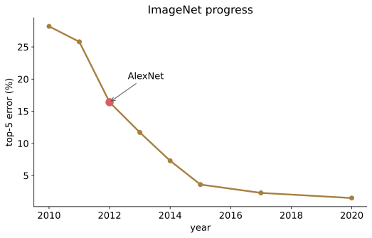

本讲目录
第 05 讲 · AlexNet 与深度学习热潮
诞生场景：2012 年之前，计算机视觉的标准流程是：博士们手工设计特征（SIFT、HOG……一个好特征够发一篇顶会），再喂给 SVM。ImageNet 挑战赛（120 万张图、1000 类）上，这套流程的错误率卡在 26% 附近逐年只降零点几。2012 年 9 月 30 日，Hinton 的两个学生 Krizhevsky 和 Sutskever 用一个 8 层卷积神经网络（AlexNet）拿到 15.3%，领先第二名 10.9 个百分点——竞赛史上从未有过的断层。整个领域一夜转向，深度学习热潮就此点燃。本讲讲清楚：CNN 是什么、为什么它天生适合图像、以及 2012 年到底是哪几件事凑齐了。


1. 为什么全连接网络搞不定图像
把一张 \(224 \times 224 \times 3\) 的彩色图直接拉平成向量，维数 \(d = 150{,}528\)。接一个区区 1000 个神经元的全连接隐藏层，参数量：
一层就 1.5 亿参数——过拟合（第 01 讲：复杂度远超数据量）、算不动，而且浪费：它为"左上角的猫"和"右下角的猫"分别学一套完全独立的权重，尽管两者是同一个模式。全连接层对输入维度的排列是无差别的——把所有像素固定打乱，它学得一样好——这说明它完全没有利用图像的结构。
图像有什么结构？三条先验：
- 局部性：识别边缘、角点，只需看一小片邻域；
- 平移共性：探测"竖直边缘"的方法在图像任何位置都一样；
- 层级性：边缘 → 纹理 → 部件（眼睛、轮子）→ 物体（脸、车）。
CNN 就是把这三条先验硬编码进网络结构的产物——第 01 讲 NFL 定理说"学习必须押注世界的结构"，CNN 是教科书级的押注。
2. 卷积层的数学
2.1 定义
二维离散卷积（数学定义）：\((I * K)(i,j) = \sum_m \sum_n I(i-m,\, j-n)\, K(m,n)\)。深度学习框架实际实现的是不翻转核的互相关：
（核是学出来的，翻不翻转只是参数的重排，无实质差别，故行业统一叫"卷积"。）\(K\) 是一个小窗口（如 \(3\times3\)），称为卷积核 / 滤波器：它在图像上滑动，每个位置输出"该处邻域与模板的匹配程度"，得到一张特征图。经典手工核可以帮助建立直觉——比如 \(K = \begin{pmatrix} -1 & 0 & 1 \\ -2 & 0 & 2 \\ -1 & 0 & 1 \end{pmatrix}\)（Sobel）输出竖直边缘图。CNN 与手工特征时代的分野在于：核里的数字不再由人设计，而是当成参数由反向传播学出来。
一个卷积层含多个核（比如 64 个），每个核产出一张特征图；对多通道输入，核的形状是 \(k \times k \times C_{\text{in}}\)，跨通道求和。输出尺寸（输入宽 \(W\)、核宽 \(k\)、边缘补零 \(p\)、步幅 \(s\)）：
2.2 参数量：三个数量级的压缩
第一层用 64 个 \(11 \times 11 \times 3\) 的核（AlexNet 的真实配置量级）：
对比全连接的 \(1.5 \times 10^8\)：少了四个数量级。压缩来自两条：局部连接（每个输出只看 \(11\times11\) 邻域，不看全图）与参数共享（同一个核用于所有位置——"竖直边缘探测器"只学一份）。用第 01 讲的语言：假设空间被先验大幅裁剪，同样数据下泛化界大幅收紧。
2.3 平移等变性（证明）
记平移算子 \((T_\Delta I)(i,j) = I(i - \Delta_1, j - \Delta_2)\)。则
即 \(T_\Delta I \star K = T_\Delta(I \star K)\)：先平移再卷积 = 先卷积再平移。猫往右挪 10 像素，特征图上的"猫响应"也恰好右挪 10 像素、值不变——模式识别与位置解耦。这叫等变（equivariance）；配合后面的池化与最终的全局汇聚，逐渐升级为不变（invariance）：无论猫在哪，"有猫"的判断不变。
2.4 池化与感受野
池化（pooling）：把特征图每个 \(2\times2\) 小块换成其最大值（max pooling），尺寸减半。作用：缩小计算量、扩大后续层视野、并提供局部平移不变性（模式挪动 1 像素，最大值多半不变）。
感受野：输出图上一个像素"看得见"的输入区域。逐层递推（第 \(l\) 层核宽 \(k_l\)、步幅 \(s_l\)）：
层数越深、中间步幅越多，感受野越大——底层看边缘，高层看物体，层级先验由此实现。训练后的可视化（Zeiler & Fergus 2013）证实了这一点：第 1 层学出 Gabor 状边缘核，中层响应纹理与部件，高层响应完整物体——网络自己学出了过去要靠博士手工设计的整套特征体系，而且是为任务量身定做的。这就是"表示学习"，深度学习的真正卖点。
1998 年 LeCun 的 LeNet-5（卷积-池化-卷积-池化-全连接）已经集齐了全部要素，在手写数字上商用（美国的支票读取机）。但在更大的图上它火不起来——差的不是想法，是燃料。
3. 2012：三样燃料同时到位
① 大数据——ImageNet。李飞飞团队 2009 年发布：1400 万张标注图像、2 万类；竞赛用其中 120 万张、1000 类。此前的数据集（几万张量级）喂不饱深度网络（第 01 讲：大假设空间需要大 \(n\)），ImageNet 第一次够了。
② 大算力——GPU。为游戏而生的显卡恰好擅长卷积所需的大规模并行乘加。AlexNet 用 2 块 GTX 580（各 3GB 显存，模型被迫劈成两半分放）训练约一周；同样的活 CPU 要以月计。深度学习从此与 GPU 绑定，这条线一路延伸到今天的万卡集群与英伟达的市值神话。
③ 训练技巧——把第 04 讲的死穴逐个拆掉：
- ReLU：\(\mathrm{ReLU}(z) = \max(0, z)\)。正区导数恒为 1——第 04 讲梯度消失的元凶（sigmoid 导数 \(\leq 1/4\) 的连乘收缩）直接消失，深层网络的底层重新收到梯度。AlexNet 论文实测：达到同样训练误差比 sigmoid/tanh 快 6 倍。代价是"死神经元"（落入负区梯度为 0），后有 LeakyReLU/GELU 等修补，但"用分段线性替代饱和函数"这一步是决定性的。
- Dropout：训练时每个神经元以概率 \(p\) 被随机置零。两种解读：(a) 隐式集成——每个 mini-batch 训练的是一个随机子网络，\(n\) 个神经元对应 \(2^n\) 个子网共享参数，测试时近似对指数多个子网做平均（bagging 的极限版，第 03 讲的降方差逻辑）；(b) 反共适应——神经元不能依赖特定同伴存在，被迫各自学出独立有用的特征。测试时不丢弃，但激活期望变了：训练时 \(\mathbb{E}[\tilde a] = (1-p)\,a\)，故测试时须把权重乘 \((1-p)\) 校正（现代实现用 inverted dropout：训练时就除以 \(1-p\)，测试时什么都不做）。
- 数据增强：随机裁剪、翻转、色彩扰动——把先验"这些变换不改变类别"变成免费的新样本，又一次是归纳偏置的注入。
配方的完整性
回看第 04 讲第二次寒冬的三条死因：梯度消失（ReLU 解决）、数据少（ImageNet 解决）、算力弱（GPU 解决）。没有新理论，没有新范式，是工程要素的凑齐——这个"理论滞后于实践"的格局从 2012 年延续至今（第 07 讲的 Scaling Laws 依然是经验规律）。
4. 军备竞赛与 ResNet（2012–2015）
AlexNet 之后，ImageNet 错误率成为整个领域的记分牌：
- VGG（2014，19 层）：只用 \(3\times3\) 小核往深堆。两层 \(3\times3\) 的感受野等于一层 \(5\times5\)（用 2.4 节公式验证：\(r = 1 + 2 + 2 = 5\)），但参数更少（\(2 \times 9C^2 = 18C^2 < 25C^2\)）且多一次非线性——"小核 + 深度"胜过"大核 + 浅度"成为定式；
- GoogLeNet（2014，22 层）：多尺度并行的 Inception 模块 + 用 \(1\times1\) 卷积压通道省算力；
- 然后撞墙了：把网络堆到 30、50 层，训练误差不降反升。注意这不是过拟合（过拟合是训练好测试差），而是退化（degradation）：更深的模型明明包含浅模型（多出来的层学恒等映射即可），优化器却找不到这个解——非凸优化的困境赤裸裸地摆在台面上。
ResNet（He et al. 2015，152 层）的解法是一行改动。让模块不再直接学目标映射 \(H(x)\)，而是学残差 \(F(x) = H(x) - x\)：
输入 \(x\) 通过一条捷径（skip connection）直接加到输出上。两个立竿见影的效果：
学恒等变容易了：只需把 \(F\) 压到 0（权重归零即可），退化问题的病根被拔掉。
梯度有了高速公路：反向传播过这个模块，
第一项原封不动地穿透模块——无论 \(F\) 的梯度多小，深层的梯度都能沿捷径无衰减直达浅层。第 04 讲的连乘衰减 \(\prod(\cdot)\) 结构，被加法结构 \(I + (\cdot)\) 替换了。配合 BatchNorm（Ioffe & Szegedy 2015：对每个 mini-batch 把各通道激活标准化 \(\hat z = \frac{z - \mu_B}{\sqrt{\sigma_B^2 + \epsilon}}\) 再学个缩放平移 \(\gamma\hat z + \beta\)，让每层输入分布稳定、可用大学习率），百层千层网络从此可训。
ResNet 在 ImageNet 上错误率 3.57%，首次超过人类水平（约 5%）。残差连接从此成为一切深度架构的标配——包括下一讲的 Transformer（每个子层都是 \(x + \text{Sublayer}(x)\)）和今天所有 LLM。这一小节的公式是你与现代所有大模型架构之间的直接桥梁。
5. CNN 大放异彩（2012–2017）
热潮迅速溢出分类任务：目标检测（R-CNN 系列、YOLO：图里有什么、在哪）、语义分割（逐像素分类，医学影像）、人脸识别（刷脸支付背后是 CNN 特征 + 度量学习）、风格迁移、AlphaGo（2016：棋盘当 19×19 的"图像"，CNN 评估局面 + 蒙特卡洛树搜索——第一次让"深度学习"成为全球新闻头条）。
工程范式也随之定型——迁移学习：在 ImageNet 上预训练的 CNN，其底层特征（边缘、纹理）是通用的；新任务只需换掉最后几层、用小数据微调。"预训练 + 微调"这个今天 LLM 世界的核心工作流，是 CNN 时代发明并验证的。
同时,一个旧行当悄然消亡：手工特征工程。SIFT、HOG 的作者们转了方向，"端到端学习"（像素进、答案出，中间一切表示自动学习）成为默认信条。人类的角色从"设计特征"上移到了"设计结构先验（架构）"——而下一讲将看到，连结构先验都被进一步简化的架构，如何吞掉整个 NLP，再回头吞掉视觉本身。
本讲小结
| 概念 | 一句话 |
|---|---|
| 全连接之败 | \(10^8\) 参数 + 无视图像结构 + 位置间重复学习 |
| 卷积 | 滑动窗口模板匹配；核由反向传播学出 |
| 参数共享 | 一个模式探测器全图共用，参数量降四个数量级 |
| 平移等变 | \(T_\Delta I \star K = T_\Delta(I \star K)\)，逐行可证 |
| 感受野 | \(r_l = r_{l-1} + (k_l - 1)\prod s_i\)；深度造就层级特征 |
| AlexNet 配方 | ImageNet + GPU + ReLU + dropout + 数据增强 |
| ReLU | 正区导数恒 1，拆掉梯度消失的连乘收缩 |
| ResNet | \(y = x + F(x)\)；梯度走加法高速路，百层可训 |
| 范式转移 | 特征工程 → 表示学习；预训练 + 微调诞生 |
动手：跑 labs/lab05_cnn_mnist.py——在你的 M4（MPS 加速）上训一个小 CNN 识别手写数字，对比全连接基线的参数量与准确率，并可视化第一层学出的卷积核。
延伸阅读：Krizhevsky et al. "ImageNet Classification with Deep CNNs" (2012)——深度学习时代的开山论文，意外地好读；He et al. "Deep Residual Learning" (2015)。
下一讲离开图像，进入语言。图像是固定尺寸的网格，而句子是变长的序列，"猫追狗"和"狗追猫"用词相同意义相反——顺序就是一切。RNN 为此而生又困于此，直到 2017 年一篇标题狂妄的论文出现：《Attention Is All You Need》。